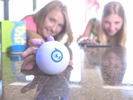

What You Should Know
What Is a Robot?
Robots are a type of machine. A machine makes work easier by using a source of energy. A robot is a type of machine, but not all machines are robots.
Some robots are called electromechanical machines because they use both electronics and mechanics to get work done. Electronics is the science of controlling electrical energy and is needed for ALL robots (and some machines) to do their jobs. Software programs tell robots exactly how to do their job and sensors help robots adjust to new situations. Mechanics is the way a robot is built and how it moves. Robots (and all machines) are made up of mechanical parts. Mechanical parts are the physical pieces that make up the machine. Examples include motors, wheels, and gears.

Sphero Is a Robot
Sphero is a spherical (ball-shaped) robot. Unlike many other robots, Sphero has no outside moving parts: all of its electrical and mechanical parts are already inside of its hard shell. This allows you to focus on programming, instead of building, the robot.
Everyday Algorithms
Algorithms help us to do daily tasks. They can tell us how to do tasks, the order in which to do tasks, when to start and stop tasks, and how many times to do a task.
The images below show different examples of how we may follow algorithms in our everyday lives.
 |
 |
 |
 |